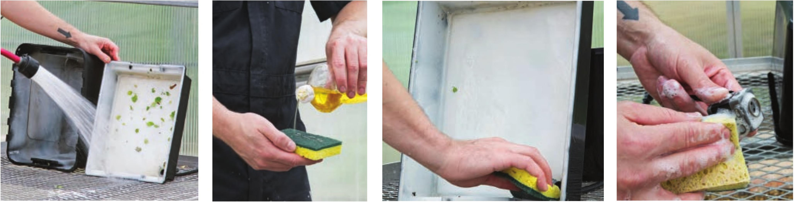
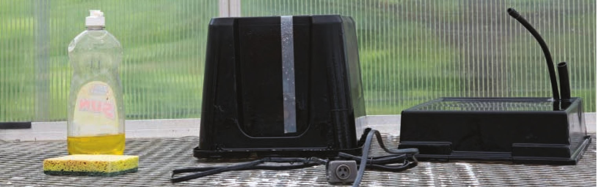

CLEANING Hydroponic growers can use a variety of products to sanitize their gardens. The safest and easiest option is usually dish soap. Some additional options available to hobby hydroponic growers include household bleach (use V2 to 1 ounce per gallon of water), isopropyl alcohol (70 percent or stronger), and hydrogen peroxide (3 percent is generally sufficient; stronger concentrations are available but they must be handled with care, so read and follow product labels).  